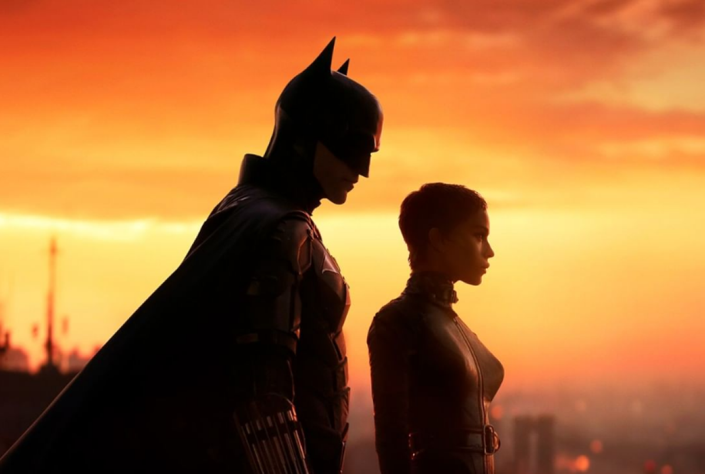
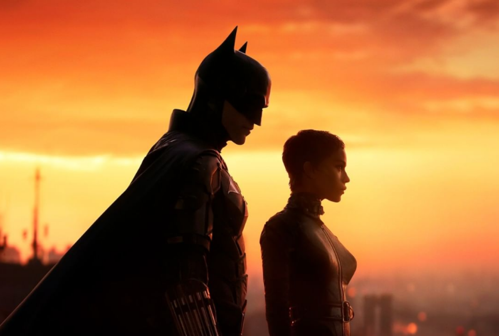

Qual a história do novo Batman? Batman mostrará Bruce Wayne (Pattison) atuando em seu segundo ano como combatente do crime. O vigilante precisa enfrentar o vilão Charada, vivido por Paul Dano. Algumas prévias do filme indicam que o vilão tem alguma relação com o passado da família Wayne.

 



Elenco :
Robert Pattinson - Bruce Wayne,
Zoë Kravitz - Selina Kyle e Mulher-Gato,
Jeffery Wright - Detetive James Gordon,
Paul Dano - Edward Nashton e Charada
Assista video abaixo